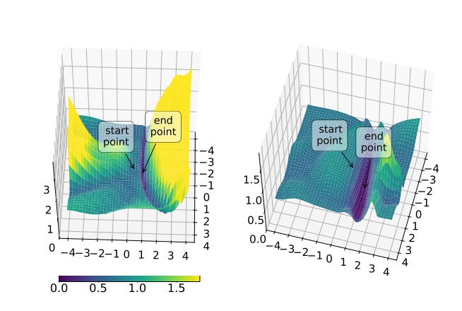

序言
自 Transformer 模型的文章《Attention is all you need》这篇经典发表的时刻，整个自然语言处理界发生了天翻地覆的变化，强大的注意力机制使得模型能够摆脱RNN模型的长时依赖的问题，且在各种NLP下游任务中，效果吊打RNN系列模型。随后经典名作GPT，BERT这些预训练模型的paper相继发表，从此NLP进入预训练时代。由于其对基础的语意句法等nlp的特征超强的捕获能力，基于Transformer系列的backbone预训练模型在下游任务微调成一种常用的方法。
虽然每年有大量的前沿研究基于Bert这样的模型，但是很多文章—-表面是对模型进行了创新获得了不错的效果，究其本质，无非是扩大了模型的参数量，提高训练数据的质量和数量。因此，取得了更为理想的效果。关于为什么模型的效果好，以及每一层的神经网络到底是取得了如何的效果则没有系统的阐释。今天读到了一篇《A Primer in BERTology: What We Know About How BERTWorks》发表于Transactions of the Association for Computational Linguistics。这篇文章对于bert模型的一些细节进行了系统的论述，很全面，因此，读了一下，把它分享给大家。
动机
众所周知，BERT已经在nlp领域大杀四方，但是对于“why it works well”相对来说没有那么多的研究。如此一来，想要更进一步做出更加solid的研究，需要对该模型有更多的了解。 相比较一些经典的backbone，比如说卷积神经网络(CNN)，在感性上的动机则没有特别明显。我们希望对其中的一些结构进行分析，使得模型中具体所做的事情更容易被人们所认识，但是，对于模型过于大的尺寸所造成的预训练不好做（大部分研究人员没有超多的显卡，以及预训练所耗费的经费十分多）且想要做消融实验并不容易。因此对于近些年来对解释bert的文章做一个综述，方便大家对于该模型的认识。
主要内容
这篇文章主要介绍了一些已经被人们所理解的模型其中的部分结构，并且也同样强调了一些仍旧需要探索的地方。
首先，将要介绍一些对模型“linguistic”上的探索。比如说：目前关于 BERT 学习的语言和世界知识类型的证据，以及这些知识可能存储在模型中的位置和方式。
之后将介绍模型的技术方面，并提供当前方案的概述，改进 BERT 的架构、预训练和微调。
最后，讨论了过度参数化的问题、压缩 BERT 的方法以及作为模型分析技术的修剪的新生领域。
BERT 模型概述
先简要说一下BERT模型的基本结构，BERT是由相同的Transformer的编码器堆叠而成，其中编码器中最重要的成分是“多头注意力机制”，对于每一个“头”来说，它由三个矩阵进行矩阵乘法完成对于注意力的计算，这三个矩阵分别称为，“key”矩阵，“query”矩阵，“value”矩阵，对于输入文本中的每一个词（这里说词是指一个文本的在输入端所能分解成的最小组成单元，对于英文来说可以是一个词组，单词，或者亚词，或者是字母）通过三个矩阵的线性变换求得每个词的表示，然后对于每一个头的输出进行组合，最后通过全连接层得到最终的文本表示，当然在输入端到多头注意力端有一个残差连接结构。并且最后的输出是经过归一化处理操作所得到(按照一定的均值和方差得到的分布)。
通常情况下，BERT的工作流程分为以下两个阶段：预训练阶段和微调阶段，在预训练阶段，运用MLM（Masked Language Model）任务和NSP(Next sentence prediction)任务,在微调阶段，会在BERT输出的基础上添加一层或多层全连接神经网络。
上文提到，对于模型的输入表示来说，可以分解成词组，单词，亚词，或者是字母，BERT模型使用了亚词的表示方式，通过wordpiece算法将一个文本中的每个英文单词切分成亚词的大小，通过这样的方法既可以保留更多的语意信息，相比较切分成单词来说，可以缩小此表的大小。同时，还需要增加另外两个表示层，分别是表示单词在一句话中位置关系的postion编码，另外一个段编码，表示的是一种句子级别的相对位置关系。这最终的输入表示为这三种表示方式相加。另外在一段文本开始时在word编码层加入一个特殊的字段[CLS]位。在两句话间隔处加入[SEP]字段。
谷歌和抱抱脸提供了多种版本的BERT源代码（看源码是搞清模型细节的最有效方式），其中包括了“base”和“large”版本的模型（区别在于模型的大小）。
BERT 到底学了个啥？
介绍完一些基础的概念后，下面要进入正题了，BERT中的网络到底都学了什么知识呢？
许多研究着眼于编码在BERT权重中的知识。流行的方法包括 MLM 的填充式探测、自我注意权重分析以及使用不同BERT表示作为输入的探测分类器。
句法知识
BERT的表示实际上是分层的而不是线性的(lin et al(2019))，举一个例子，除了词序信息以外，还有一些句法树结构的东西，
Tenney et al. (2019b) and Liu et al. (2019a)，BERT 嵌入对有关词性、句法块和角色的信息进行编码。 （Vilares et al., 2020; Kim et al., 2020; Rosa and Mareˇcek, 2019)这篇文章表明，有足够的句法知识似乎在词嵌入的部分被表示从而恢复句法树。尽管探测分类器无法恢复句法树中远距离父节点的标签。
(Liu et al., 2019a). Warstadt and Bowman (2020)表明在四分之三的探测任务中存在层次结构的证据。
至于句法是如何表示的，句法结构似乎没有直接编码在自注意力权重中。Htut et al. (2019) 表明即使有根的标注，也无法从 BERT 头中提取完整的解析树。Jawahar et al. (2019)直接从自注意力权重中提取的依赖树的简要说明，但不提供定量评估的方法。
然而，句法信息可以从BERT的token 表示中恢复。Hewitt and Manning (2019) 的工作可以从bert的token嵌入中学习到一个转换矩阵，使得他们在PennTreebank data 上恢复句法依存关系(Manning et al., 2020)。Jawahar et al. (2019)使用张量积分解网络（Tensor Product Decomposition Networks(McCoy et al., 2019a)）对 [CLS] token进行转换实验，得出的结论是依赖树是 5 种分解方案中的最佳匹配（尽管报告的 MSE 差异非常小）。Miaschi and Dell’Orletta (2020)使用连接的标记表示作为输入执行一系列句法探测实验。
请注意，所有这些方法都在寻找标准语言结构的证据，并为探索添加一些额外的知识。Wu et al. (2020) 在 MLM 任务中，基于测量一个词对预测序列中另一个词的影响，提出了一种无参数方法。如图所示:
他们得出的结论是，BERT“自然地”学习了一些句法信息，尽管它与语言注释资源不太相似。
MLM 的填充式探测表明，BERT 在执行完形填空任务时会考虑主谓一致(Goldberg, 2019; van Schijndel et al., 2019),即使对于无意义的句子和在主语和动词之间有干扰从句的句子(Goldberg, 2019). (Warstadt et al. (2019)对负极性项目 (NPI) 的研究表明，与范围违规相比，BERT 能够更好地检测 NPI 的存在（例如“ever”）和允许使用它们的单词（例如“whether”）。
上述关于句法知识的主张被 BERT 不“理解”否定并且对格式错误的输入不敏感的证据所掩盖。特别是，即使是打乱词序、截断句子、删除主语和宾语，它的预测也没有改变。后者似乎更有可能，因为 Glavaš 和 Vuli´c (2020) 报告说，带有监督解析的中间微调步骤对下游任务的性能没有太大影响。
语义知识
迄今为止，更多的研究致力于 BERT 的句法知识而非语义现象。但是，我们确实有来自 MLM 探索性研究的证据表明 BERT 对语义角色有一些了解(Ettinger, 2019).BERT 甚至对与正确角色语义相关的语义角色的错误填充物表现出一些偏好，而不是那些不相关的语义角色（例如，给厨师小费比给知更鸟小费更好，但比给服务员小费更糟糕）。
Tenney et al. (2019b) 表明，BERT 对有关实体类型、关系、语义角色和原型角色的信息进行编码，因为可以使用探测分类器检测到这些信息。
(Wallace et al., 2019b)表明BERT对于数字信息表示十分吃力。加法和数字解码任务表明，BERT 不能很好地表示浮点数，并且无法从训练数据中泛化。问题的一部分是 BERT 的 wordpiece 标记化，因为相似值的数量可以划分为截然不同的词块。
开箱即用的BERT模型对于命名实体的替换是十分敏感的，例如，在共同引用任务中替换名称会改变85%的预测(Balasubramanian et al., 2020)。 这表明该模型实际上并没有形成命名实体的一般概念，尽管它在NER探测任务中的F1分数很高。(Tenney et al., 2019a). Broscheit (2019) 发现在维基百科实体链接上微调 BERT “教”它额外的实体知识，这表明它在维基百科的预训练期间没有吸收所有相关的实体信息。
世界知识
BERT 中捕获的有关常识知识的大部分证据来自使用它来提取此类知识的从业者。一项对 BERT 的直接探索性研究报告称，BERT 在语用推理和基于角色的事件知识方面存在困难(Ettinger, 2019)。
BERT 还挣扎在对象的抽象属性以及可能被假设而不是提及的视觉和感知属性这些问题上(Da and Kasai, 2019)。
BERT 的 MLM 组件通过填空很容易适应知识归纳（例如“猫喜欢追逐 [_]”）。Petroni et al. (2019) 表明，对于某些关系类型，普通 BERT 与依赖知识库的方法相比具有竞争力。如下图所示：
Roberts et al. (2020)对使用 T5 模型的开放域 QA 显示乐相似的效果。
(Raffel et al., 2019). Davison et al. (2019)表明它可以更好地推广到看不见的数据。为了检索 BERT 的知识，我们需要好的模板句子，并且有一些有关于它们的自动提取和扩充的工作(Bouraoui et al., 2019; Jiang et al., 2019b)。
但是，BERT 无法根据其世界知识进行推理。Forbes et al. (2019)表明 BERT 可以“猜测”许多对象的可供性和属性，但不能推理属性和可供性之间的关系。例如，它“知道”人可以走进房子，房子很大，但不能推断出房子比人大。
Zhou et al. (2020)and Richardson and Sabharwal (2019)还表明性能随着必要推理步骤的数量而下降。(Poerner et al., 2019)表明 BERT 的一些世界知识成功来自于学习刻板的联想。例如，一个听起来像是意大利名字的人被预测为意大利人，即使它是不正确的。
一些局限性
第 3 节和第 4 节中的多项探索性研究报告称，BERT 拥有数量惊人的句法、语义和世界知识。然而，Tenney et al. (2019a)评论说，“我们的探测分类器没有观察到语言模式这一事实并不能保证它不存在，并且观察到一个模式并不能告诉我们它是如何使用的。”还有一个问题应该允许探测有多复杂(Liu et al., 2019a)。如果更复杂的探针可以恢复更多信息，那么我们在多大程度上仍然依赖原始模型？
此外，不同的探测方法可能会导致互补甚至相互矛盾的结论，这使得单一测试（如大多数研究）是不够的(Warstadt et al., 2019)。
给定的方法也可能有利于一个模型而不是另一个模型，例如，RoBERTa 用一种树提取方法跟踪 BERT，但用另一种方法领先(Htut et al., 2019)。
语言形式的选择也很重要(Kuznetsov and Gurevych, 2020).
鉴于这一切，另一种选择是专注于识别 BERT 在推理时实际依赖的内容。目前在架构块级别都在追求这个方向。在模型权重编码的信息水平上。遗忘探测(Elazar et al., 2020) 旨在专门从模型中删除某些信息并查看它如何改变性能，例如发现语言建模确实依赖于词性信息。
另一个方向是信息论探索。Pimentel et al. (2020) 将探测操作化为估计学习表示和给定语言属性之间的互信息，这强调了重点不应该放在表示中包含的信息量上，而应该放在从表示中提取它的难易程度上。Voita and Titov (2020) 将从给定表示中提取信息所需的工作量量化为传达探测大小和完成任务所需的数据量所需的最小描述长度。
局部化语言的知识
BERT 嵌入
对于像BERT这样的模型，“嵌入”（embedding）代表了从模型输出的向量，无论是传统的词嵌入例如word2vec还是 BERT这样的嵌入方式都可以当作是对词互信息的极大化(Kong et al., 2019)，但是后者的方式更偏向于对当前语境的理解——即每个词的表示向量取决于特定出现的上下文条件，也会包含一些关于上下文的信息(Miaschi and Dell’Orletta, 2020)。
一些研究表明，蒸馏的上下文嵌入可以更好地编码词汇语义信息（比如说它们会在基于词汇的任务上有更好的表现，比如说词汇的相似度）。将上下文化表示提取为静态表示的方法包括跨多个上下文聚合信息（Akbik et al., 2019; Bommasani et al., 2020），编码几乎完全依赖给定单词含义的“语义漂白”句子（比如说，”This is <>”）(May et al., 2019),甚至使用上下文向量化的词嵌入去训练一个静态的词嵌入(Wang et al., 2020d).
当然，这其中是有一些可以探讨和提升的地方，比如说Ethayarajh (2019)测量每一层中相同单词的嵌入有多相似，在 BERT 靠输出端的层会产生更多特定于上下文的表示。他们同时也发现BERT 嵌入在向量空间中占据了一个狭窄的锥体，并且这种效果从较早的层到后面的层增加。也就是说，如果嵌入是方向一致的（各向同性的），两个随机词的余弦相似度将比预期的要高得多。由于各向同性被证明有利于静态词嵌入(Mu and Viswanath, 2018)，这可能是探索 BERT 的一个可能出更多成果的方向。
由于 BERT 嵌入是上下文化的，一个有趣的问题是它们在多大程度上捕捉到了多义词和同音词等现象。确实有证据表明 BERT 的上下文嵌入形成了与词义相对应的不同集群(Wiedemann et al., 2019; Schmidt and Hofmann, 2020)，使 BERT 在词义消歧任务中取得成功。然而，Mickus et al. (2019)注意到，同一个词的表示取决于它出现的句子的位置，这可能是由于 NSP 目标函数所造成的（从语言学的角度来看，这是不可取的，并且可能是未来工作的有希望的途径。）。
上述讨论涉及词嵌入，但 BERT 通常用作句子或文本编码器。
生成用于分类的句子或文本表示的标准方法是使用 [CLS] 标记，但也正在讨论替代方案，包括连接标记表示（Tanaka et al., 2020），归一化平均值(Tanaka et al., 2020)和层激活
(Ma et al., 2019). 参见 Toshniwal et al. (2020)对跨任务和句子编码器的几种方法进行系统比较。
关于自注意力头
一些研究提出了注意力头类型的分类。Raganato and Tiedemann (2018) ，讨论关注词嵌入本身，上一个/下一个
token和句子结束位置的token。Clark et al. (2019)
区分关注上一个/下一个token、[CLS]、[SEP]、标点符号和“广泛关注”序列。
如下图所示，Kovaleva et al. (2019)提出了注意力的5种机制。
具有语言功能的头部
上中显示的“异构”注意力模式可能在语言上是可解释的，并且许多研究都集中在识别自注意力头的功能上。特别是，一些BERT的头似乎专门应对一种特定类型的句法关系。Htut et al. (2019) and Clark et al. (2019) 研究称一些BERT的头相较于随机选择来收会将更多的注意力关注到一个特定的句法位置上。虽然他们在关于这方面的研究上采用了不同的数据集和方法，但是他们都发现有些头对于在obj角色里面的词的关注比位置基线要高。nsubj、advmod 和 amod 的证据因这两项研究而异（这块的obj,nsubj,advmod,amod是句法依存分析中对词汇的分类，有兴趣的同学可以去查阅相关资料）。在Voita et al. (2019b)的研究结果也支持这样的结论。Hoover et al. (2019)假设即使是像 dobj 这样的复杂依赖项也是由头组合而不是单个头编码的，但这项工作仅限于定性分析。Zhao and Bethard (2020)
专门寻找头部编码否定范围。
Clark et al. (2019)和Htut et al. (2019)都认为没有一个头具有完整的句法树信息，符合部分句法知识的证据。然而，Clark et al. (2019) 认为识别一个可以直接用作分类器的 BERT 头，以与基于规则的系统一样执行共指解析，这本身似乎需要相当多的句法知识。
Lin et al. (2019)目前的证据表明注意力权重是主谓一致和反身照应的弱指标(reflexive anaphora)。BERT 的自注意力权重不是作为应该相关的标记之间的强指针，而是接近统一的注意力基线，但对与心理语言学数据一致的不同类型的干扰物存在一定的敏感性。这与 Ettinger (2019) 的结论一致。
据我们所知，形态信息在 BERT 头中尚未解决，但Correia et al. (2019)在一些基础的Transformer模型种使用稀疏注意力变体。一些注意力的头表现出将使用BPE分解的亚词融合的效果。对于语义关系，(Kovaleva et al., 2019)称 self-attention head 编码核心帧-语义关系,(Cui et al., 2020)以及词典和常识关系。
自注意力作为一种可解释性机制的整体流行是由于这样一种想法：(Clark et al., 2019)注意力权重有一个明确的含义：在计算当前单词的下一个表示时，特定单词将被加权多少。(Jain and Wallace, 2019; Serrano and Smith, 2019; Wiegreffe and Pinter, 2019; Brunner et al., 2020)对这个问题也对这个问题进行了研究。在一个多层的模型中，往往注意力机制后面会进行非线性变化的激活。个别头捕获的特征并不能提供完整的语义理解。
很多文章也做了注意力可视化的工作，并且也有很多可视化的工具(Vig, 2019; Hoover et al., 2019)，可视化通常仅限于定性分析（通常带有精选示例）((Belinkov and Glass, 2019),并且不应被解释为确凿的证据。
对特殊字段的注意力
Kovaleva et al. (2019) 表明大多数自注意力头不直接编码任何非平凡的语言信息，至少是在GLUE上进行微调的任务(Wang et al., 2018）有这样的效果,因为只有不到 50% 的注意力头表现出“异构”模式。大部分头产生了垂直的特征（比如说更多注意到[CLS],[SEP],标点符号的token）。Clark et al. (2019)得出了相同的结论。这种冗余可能与过度参数化问题有关。
Kobayashi et al. (2020) 的研究表明，注意加权输入向量的归一化可以更直观地解释自我注意，减少对特殊标记的注意。然而，即使注意力权重被规范化，大多数的头部仍然不是潜在可解释的(Prasanna et al., 2020)。在许多注意力研究中，一种方法选择是关注词间注意力并简单地排除特殊标记，例如像. Lin et al. (2019) and Htut et al. (2019)的研究。然而，如果在推理时对特殊标记的关注确实很重要，那么纯粹从词间注意力模式得出结论似乎不是那么可信。
对于特殊的标记的理解往往并不是那么容易。比如对于[CLS]位的理解，通常是被认为对一句话的聚合理解(虽然所有的token多多少少都会有一些句子级别的语义信息)；在这种情况下，我们可能看不到例如词间注意力中的完整句法树，因为部分信息实际上包含在 [CLS] 中。
Clark et al. (2019)尝试使用基本 BERT 对 Wikipedia 段落进行编码，以特别考虑对特殊标记的关注，并指出早期层的头部更多地关注 [CLS]，中间层关注 [SEP]，最后一层关注句点和逗号。他们假设它的功能可能是“无操作”之一，如果注意力头的模式不适用于当前情况，则忽略头部的信号。例如，[SEP] 从第 5 层开始受到越来越多的关注，但它对预测的重要性下降。然而，然而，对于具体的下游任务，在对 [SEP] 和 [CLS] 进行微调后后将会得到很多注意力k (Kovaleva et al., 2019)。有趣的是，BERT 也非常关注标点符号，Clark et al. (2019)对此进行了研究，通过句号和逗号几乎与特殊标记一样频繁的事实来解释，因此模型可能会出于相同的原因学会依赖它们。
BERT 层
对于BERT的第一个输入层将token，segment，位置编码的信息进行了融合。
理所当然地，较低层具有关于线性词序的最多信息。Lin et al. (2019)报告了 BERT-base 中第 4 层周围线性词序的知识减少，并且伴随了一些分层句子结构知识的增加，由预测标记索引、主要助动词和句子主语的探测任务检测到。
在具有不同任务、数据集和方法的研究中，人们普遍认为句法信息在 BERT 的中间层中最为突出。Hewitt and Manning (2019)从中间 BERT 层重建句法树深度最成功（base-BERT 为 6-9，BERT-large 为 14-19）。Goldberg (2019)发现在第八第九层主谓一致性上表现效果最好，Jawahar et al. (2019)进行的句法探测任务上也大致在模型的中间层的效果最好。中间 BERT 层中句法信息的突出在 Liu et al. (2019a)的研究中表明， Transformer 的中间层总体上表现最好，跨任务的迁移能力最强。如下图所示：
关于句法块则有一些相互矛盾的研究。Tenney et al. (2019a)总结到基本的句法信息会更早的出现在模型的浅层，而对于高层来说会更多捕捉到语义的特征。在典型的NLP pipline中如 词性标注，语义角色标签，依赖解析,验证了这一些结果。Jawahar et al. (2019)报告了模型低层对chunking任务更有用，而中间层对parsing任务更有用。但是与此同时，Liu et al. (2019a)的实验结果则表明，无论是词性标注还是chunking任务来说，都是中间层表现的最好。在Bert-base，Bert-large有着相同的结论。但是值得注意的是，他们用的探测任务套件不同。
对于BERT的最后一层来说，是最具任务针对性的层。比如在预训练阶段，这意味着它会更加针对MLM任务，并且在(Liu et al., 2019a)中解释了为啥中间层有更好的迁移性。在微调阶段，(Kovaleva et al., 2019)解释了为什么最后一层参数的变化最为剧烈。并且(Hao et al., 2019)解释了为什么对低层的网络权重改编为原始的值不会对模型的性能发生剧烈的影响。
Tenney et al. (2019a) 表明虽然句法信息出现在模型的早期并且可以局部化，但语义分布在整个模型中，这解释了为什么某些非平凡的示例在开始时得到错误解决但在后面的层中得到正确解决。
这是意料之中的：语义渗透到所有语言中，语言学家争论是否存在无意义的结构（Goldberg，2006，p.166-182）。但这衍生出了一个问题，即在 BERT 中堆叠更多的 Transformer 层实际上在语义知识的传播方面实现了什么，以及这是否有益。Tenney et al 比较了 BERT-base 和 BERT-large，发现累积得分增益的总体模式是相同的，只是在更大的模型中更加分散。
Note that Tenney et al. (2019a)的实验主要关注在了句子级别的语义关系，Cui et al. (2020)报告称对ConceptNet 语义关系的编码在早期层中是最差的，在向顶部转移的过程中增加。
Jawahar et al. (2019)假设表面特征出现在低层，句法特征出现在中间层，语义特征出现在高层。但他们的结论令人惊讶，因为本研究中只有一个语义任务实际上在最后一层达到顶峰，另外三个在中间达到顶峰，然后在最后一层显著降低。
BERT的训练
在这部分章节将展开对于BERT优化模型训练和结构的内容。
模型结构的选择
Wang et al. (2019b)对BERT模型结构的研究进行了系统的研究，他尝试了不同的层数、头部和模型参数，改变了一个选项并冻结了其他选项。他们总结认为模型的头的数量并没有模型层数的数量造成的影响大。这和Voita et al. (2019b) and Michel et al. (2019) 的研究结果保持了一致，在Liu et al. (2019a)的研究中发现模型的中间层的可迁移性更强。较大的隐层表示大小始终更好，但增益因具体设置而异。
总的来说，对于注意力头的改变和层数的改变会表现出不一样的函数功能(Liu et al., 2019a)，对于初始层来说，表现出了任务不变性的效果(Hao et al., 2019)，并且输出的token表示也和初始的token embedding的表示最为相似(Brunner et al., 2020)。如果是这种情况，更深的模型有更多的能力来编码非特定任务的信息。
另一方面，在 vanilla BERT中似乎许多的自注意力头似乎学习到了相同模式(Kovaleva et al., 2019)。这就解释了为什么对它进行剪枝不会造成太多的影响。由此产生的问题是，我们可以通过有意识地鼓励多样化的自注意力机制模式走多远：从理论上讲，这意味着在相同数量的权重下增加模型中的信息量。Raganato et al. (2020) 表示对于以 Transformer模型位backbone的机器翻译任务，我们可以简单地预设我们已经知道模型会学习的模式，而不是从头开始学习它们。
Vanilla BERT 在自注意力部分和前反馈网络层部分是对称和平衡的，但是也不是必须是这样。
对于训练方法的改进
Liu et al. (2019b) 证实了在训练过程中对于batchsize扩大的收益：对于8k大小的模型数量来说，无论是模型的困惑度还是在下游任务的表现上都有了明显的提升。并且他们推荐一些训练的参数。You et al. (2019)) 报告称对于有32k大小的batchsize的模型训练，训练收敛的时间缩短并且在性能上没有损失。Zhou et al. (2019)观察到训练后的 [CLS] 标记的归一化稳定了训练并略微提高了文本分类任务的性能。
Gong et al. (2019) 注意到，虽然自注意力机制的模式在低层和高层表现出相似的效果，模型的训练可以以递归的方式完成。其中首先训练较浅的版本，然后将训练的参数复制到更深层。这种“热启动”可以在不牺牲性能的情况下使训练速度提高 25%。
预训练BERT
原始的BERT是一个双向的Transformer并且通过NSP和MLM任务进行预训练。许多研究通过对预训练目标函数进行优化从而整体改进BERT的表达能力，可以分为以下几个点:
如何去mask？ Raffel et al. (2019) 系统地测试mask率和mask的跨度长度。Liu et al. (2019b))提出了在一个训练epoch中的多种的mask方式。Baevski et al. (2019) 选择去mask掉一个序列中的所有token而不是随机采样的方式。Clinchant et al. (2019)通过将[unk]的token替换成MASK token的方式来帮助模型可以学习到更多的不在词表中单词的表示方式从而使得翻译任务更加受益。Song et al. (2020)通过对masked和unmasked的token进行调节从而极大化信息的总量，使得模型模型可以看到有多少token被遗漏。
去对什么做mask? mask可以被作用于全词而不是word piece(Devlin et al., 2019; Cui et al., 2019)。同样的，也可以mask一个具体跨距的文本信息(Joshi et al., 2020)。来预测到底其中有多少个词被mask掉(Lewis et al., 2019)。mask掉词组信息和命名实体可以提高对结构化知识的表示能力(Sun et al., 2019b)。
在文本中的什么位置做mask? Lample and Conneau (2019) 使用任意的text stream 而不是句子对并且采用子样本频繁输出类似于Mikolov et al. (2013)中的方法。Bao et al. (2020)使用特殊的伪掩码标记将标准自动编码 MLM 与部分自回归 LM 目标相结合。
掩码的替代方式。Raffel et al. (2019)实验了替换和丢弃spans的方式。Lewis et al. (2019)探索删除、填充、句子排列和文档旋转等方式，Sun et al. (2019c)预测一个token是否是大写并且它是否出现在文档中的其它位置。Yang et al. (2019) 训练输入序列中不同的词序排列，最大化原始词序的概率(参照n-gram 词序重建问题(Wang et al., 2019a))。Clark et al. (2020)检测被生成网络替换的token而不是mask掉的token。
NSP任务的替代。移除 NSP任务并不会伤害到或者还有可能轻微提升模型的表达能力(Liu et al., 2019b;Joshi et al., 2020;) Clinchant et al., 2019). Wang et al. (2019a),and Cheng et al. (2019) 将NSP任务替换为预测上一句和下一句话。Lan et al. (2020a)用来自正面例子的句子而不是来自不同文档的句子来替换负面的 NSP 例子。ERNIE 2.0包含了句子重新排序和句子距离预测任务。Bai et al. (2020)用段落、句子和标记索引嵌入的组合替换 NSP 和标记位置嵌入。Li and Choi (2020)试验多方对话的话语顺序预测任务(并且采用的MLM任务不仅在utterancss的级别上并且还有整个对话上进行这样的操作)。
其它的任务。Sun et al. (2019c)提出同时学习 7 个任务，包括话语关系分类和预测片段是否与 IR（infromation retrival）相关。Guu et al. (2020) 在语言模型预训练中包含一个潜在知识检索器。Wang et al. (2020c)通过completion objective任务将MLM和知识进行结合。Glass et al. (2020)将MLM任务替换为span预测任务（就像抽取式的question-answering）任务类似，模型的输出预期位提供的答案不是从它的权重中产生的，而是从一个存在问题正确答案的不同的段落汇总得出（相关的搜索引擎查询片段）。
另外一个有提升空间的是预训练所得到的数据。很多研究探索增加训练数据集体量所带来的收益(Liu et al., 2019b; Conneau et al., 2019; Baevski et al., 2019),还有增加训练的轮数(Liu et al., 2019b)所带来的变化。数据也并不一定需要原始的文本内容，有很多研究整合了明确的语言信息。不论是在句法(Sundararaman et al., 2019)还是在语义上(Zhang et al., 2020)。Wu et al. (2019b) 和 Kumar et al. (2020)增加了来自带标注的任务数据集的给定序列的标签。Schick and Schütze (2020)的工作分别学习了稀有词的表示。
虽然BERT已经经常用于世界知识的源头上，当然也会存在一些提供明确结构化知识的工作。一种方法是通过实体增强的方式。比如说，Peters et al. (2019a); Zhang et al. (2019)在训练BERT的过程中引入了实体的嵌入信息，Poerner et al. (2019) 采用了实体向量作为BERT输入表示。上文中也提到过，Wang et al. (2020c)不仅通过实体嵌入来引入知识，并且通过额外的预训练目标————知识库补全预训练目标。Sun et al. (2019b,) and c)调整标准 MLM 任务以MASK命名实体而不是随机词。Yin et al. (2020) 同时在文本数据上和线性化表数据进行MLM任务。Wang et al. (2020a)使用特定于任务的适配器增强 RoBERTa 的语言和事实知识。
预训练是训练 BERT 最昂贵的部分，所以知道它提供了多少好处可以说也是十分必要的了。
在某些任务上，随机初始化和微调的 BERT 比使用任务分类器和冻结权重的预训练 BERT 获得有竞争力或更高的结果(Kovaleva et al., 2019)。普遍研究者的共识是预训练在大多数情况下确实有帮助，但程度及其确切贡献需要进一步调查。Prasanna et al. (2020)发现大多数预训练BERT的权重在微调阶段是十分有用的，尽管有“更好”和“更差”的子网络。一种解释是，预训练的权重有助于微调的 BERT 找到泛化误差更小的更宽、更平坦的区域，这使得模型对过拟合更加鲁棒，如下图所示。

鉴于提议的修改数量众多且种类繁多，人们想知道它们各自的影响有多大。然而，随着总体上模型的朝着更大尺寸的方向上发展，因此想要做系统的消融实验将变得十分昂贵。大多数的新模型宣称在标准的benchmarks上有更好的表现效果，但是但收益通常是微不足道的，模型稳定性和显著性检验的估计非常罕见。
BERT的微调
预训练+微调的方式是BERT工作流中至关重要的。前者提供任务无关的知识，后者会教模型更多依赖于对下游任务有用的的知识。
Kovaleva et al. (2019)没有发现 BERT 在 GLUE 任务上微调的情况（表明对 Universal Dependencies 进行微调确实会产生语法上有意义的注意力模式，但没有定量评估。）：在微调阶段，在3 epochs时，模型的最后两层有更多的变化，但是这种变化更多是使得自注意力集中于[SEP]
而不是语言上的可解释模式。可以理解为什么微调会增加对 [CLS] 的关注，而不是 [SEP]。如果 Clark et al. (2019) 等人认为 [SEP] 作为“无操作”指标是正确的，那么微调基本上会告诉 BERT 忽略什么。
几项研究探讨了改进 BERT 微调的可能方向：
把更多网络层考虑进去: 在深层和输出层中学习信息的互补表示(Yang and Zhao, 2019),使用所有层的加权组合而不是最后一层(Su and Cheng, 2019; Kondratyuk and Straka, 2019),和层dropout(Kondratyuk and Straka, 2019)。
两阶段微调的方式是一种中间监督训练的方式在预训练和微调阶段。(Phang et al., 2019; Garg et al., 2020; Arase and Tsujii, 2019; Pruksachatkun et al., 2020; Glavaš and Vuli´c, 2020).) Ben-David et al. (2020)提出了一种基于枢轴的 MLM 变体来微调 BERT 以进行域适应。
对抗性token扰动提高了模型的鲁棒性(Zhu et al., 2019)。
对抗正则化结合 Bregman Proximal Point Optimization 有助于缓解预训练的知识遗忘，从而防止 BERT 过度拟合下游任务(Jiang et al., 2019a)。
Mixout regularization即使对于少量训练示例，也能提高 BERT 微调的稳定性(Lee et al., 2019)。
对于大型的模型来说，即使微调也是expensive的,但是 Houlsby et al. (2019) 表明它可以通过适配器模块成功逼近。他们以一小部分计算成本在 26 个分类任务上实现了具有竞争力的性能。BERT 中的适配器也用于多任务学习(Stickland and Murray, 2019)和跨语言迁移(Artetxe et al., 2019)。微调的替代方法是从冻结的表示中提取特征，但微调对 BERT 效果更好(Peters et al., 2019b)。
当前 NLP 的一个重大方法学挑战是，新模型的报告性能改进很可能在环境因素引起的变化范围内(Crane, 2018)。BERT模型也不例外。Dodge et al. (2020)报告由于权重初始化和训练数据顺序，BERT 在 GLUE 任务上微调的显着变化。他们还提出了尽早停止前景不佳的随机种子的训练的方法。
上述内容并没有论述了当前关于微调的全部内容，比如说Siamese 孪生结构，策略梯度训练，自动课程学习等。
BERT模型的尺寸多大为好？
过度参数化
以Transformer模型backbone保持数量级增长，1.1M大小的模型在Turing-NLG(Microsoft, 2020)时达到了170亿的参数量，与 GPT-3 的 1750亿(Brown et al., 2020) 相比都相形见绌，这个趋势引起了对自注意力计算复杂度的关切(Wu et al., 2019a)。环境问题的关切(Strubell et al., 2019; Schwartz et al., 2019)，模型结构公平比较的问题(Aßenmacher and Heumann, 2020),可复现性等问题。
人类语言极其复杂，而且可能需要更多的参数来完全描述，但是当前的模型并没有很好地利用它们已经拥有的参数。Voita et al. (2019b) 发现除了少数 Transformer 头外，其他所有的 Transformer 头都可以修剪，而不会显着降低性能。对于BERT来说，Clark et al. (2019)观察到同一层中的大多数头都显示出相似的自注意力模式（可能与一层中所有自注意力头的输出都通过相同的 MLP 的事实有关），也就解释了为什么Michel et al. (2019))可以对将多数层减少到一个头。
由于任务的特性，一些BERT的头，或者网络层不仅仅是多余的(Kao et al., 2020)，也同时会对下游任务有损害，(Michel et al., 2019)报告了在机器翻译任务中停用某些头的积极影响。(Baan et al., 2019)报告了在文本摘要任务中停用某些头的集体影响。(Kovaleva et al., 2019)报告了GLUE任务上的影响。此外，Tenney et al. (2019a))检查他们的结构探测分类器的累积增益，观察到在 8 个探测任务中的 5 个中，某些层会导致分数下降（通常在最后一层）。Gordon et al. (2020)发现可以剪枝 30-40% 的权重而不影响下游任务。
通常情况下，模型尺寸更大，表现效果越好(Liu et al., 2019a; Roberts et al., 2020)，但是在主谓一致探测的任务上，BERT-base竟然比BERT-large模型效果要好(Lin et al., 2019))。考虑到语言的复杂性和大量的预训练数据，不清楚为什么 BERT 最终会出现冗余的头和层。Clark et al. (2019)认为一个可能的原因是使用注意力的dropout，这会导致一些注意权重在训练期间被归零。
比较的方法
鉴于以上关于参数过度化的证据，对于可以将BERT高效的压缩而不至于使得accuracy降低并不是一件奇怪的事情。对于现实场景的应用将是一个非常好的用途。一些好的工作结果可以总结如下表所示:
主要方法是知识蒸馏、量化和剪枝。
(Hinton et al., 2014) 对于知识蒸馏的框架具体是使用了一个尺寸较小的学生网络去模仿更大的教师网络的行为。对于BERT来说，这是通过损失函数实验实现的(Sanh et al., 2019b; Jiao et al., 2019)。模仿教师网络各个部分的激活模式(Sun et al., 2019a)，和在预训练结对对知识的迁移(Turc et al., 2019; Jiao et al., 2019; Sun et al., 2020)或者是在微调阶段的知识迁移(Jiao et al., 2019)，McCarley et al. (2020)表明到目前为止，蒸馏对 GLUE 的效果比对阅读理解的效果更好，并且报告了结构化修剪和特定任务蒸馏相结合的 QA 任务的良好结果。
量化通过降低权重的精度来减少 BERT 的内存占用(Shen et al., 2019; Zafrir et al., 2019)。注意到这种策略通常需要兼容的硬件。
在上文中提到，可以禁用单个自注意力头和BERT层，而不会显着降低性能(Michel et al., 2019;) Kovaleva et al., 2019; Baan et al., 2019)。剪枝是一种利用这一事实的压缩技术，通常通过将大型模型的某些部分归零来减少计算量。在结构化修剪中，结构化的模块被丢弃，就如LayerDrop一样(Fan et al., 2019)。在非结构化中，无论它们的位置如何，整个模型中的权重都会被剪枝，就像幅度剪枝（magnitude pruning）(Chen et al., 2020)一样，或运动修建(movement pruning)(Sanh et al., 2020)。
Prasanna et al. (2020) 和 Chen et al. (2020) 探索了彩票假说（lottery ticket hypothesis）视角下的 BERT。专门研究预训练的 BERT 中的“获胜”子网络。他们独立发现确实存在这样的子网络，并且不同任务的子网络之间的可转移性各不相同。
如果训练 BERT 的最终目标是压缩，Li et al. (2020)建议训练较大的模型并对其进行大量压缩，而不是对较小的模型进行轻微压缩。
其他技术包括将 BERT 的嵌入矩阵分解为更小的矩阵(Lan et al., 2020a), 渐进式模块替换(Xu et al., 2020)和中间编码器输出的动态消除(Goyal et al., 2020)。见 Ganesh et al. (2020)更详细地讨论了压缩方法。
剪枝和模型分析
关于剪枝作为一种模型分析技术的讨论刚刚开始。基本思想是先验压缩模型由对预测有用的元素组成；因此，通过找出他们在做什么，我们可能会发现整个网络在做什么。例如，BERT 的头部似乎编码了帧语义关系，但禁用它们可能不会损害下游任务的性能Kovaleva et al. (2019);这表明这部分的知识并没有真正被用到。
对于基础的Transformer模型，Voita et al. (2019b)识别 self-attention 头的功能，然后检查它们中的哪些在修剪后幸存下来，发现句法头和位置头是最后一个去做的事情。对于BERT来说，Prasanna et al. (2020)朝相反的方向走：根据重要性分数进行修剪，并解释剩余的“好”子网络。特别是对于自注意力头，似乎并非只有可能编码非平凡语言模式的头才能在修剪后幸存下来。
这些研究中的模型和方法不同，所以证据是不确定的。特别指出的是，Voita et al. (2019b)发现在剪枝之前大部分头都是句法信息的，Prasanna et al. (2020) –大多数头部没有潜在的非平凡注意模式。
当前头部和层消融研究的一个重要限制(Michel et al., 2019;) Koval- eva et al., 2019)是他们固有地假设某些知识包含在头/层中。然而，有证据表明在整个网络中分布的表示更加分散，例如在困难的语义解析任务上的准确性逐渐提高(Tenney et al., 2019a)，或者没有“一般”执行解析的头部(Clark et al., 2019; Htut et al., 2019)。如果是这样的话，那么对于单个组件的消融会对整个网络的权重共享机制产生损害。
一些比较重要的研究方向
BERTology 显然已经发展了很多的理论研究探索了，但是，总的来说我们还是关于BERT的工作方式有很多疑问。接下来将要列举一些未来可能会有潜力的发展方向。
需要口头推理的基准。,虽然BERT在许多 NLP 基准测试上取得突破，越来越多的分析论文表明，它的语言能力并不像看起来那么令人印象深刻。特别是，它被证明依赖于自然语言推理中的浅层启发式(McCoy et al., 2019b; Zellers et al., 2019; Jin et al., 2020)。阅读理解(Si et al., 2019a; Rogers et al., 2020; Sugawara et al., 2020; Si et al., 2019b; Yogatama et al., 2019)，
论证推理理解(Niven and Kao, 2019),和文本分类(Jin et al., 2020)))。这种启发式甚至可以用于重建非公开可用的模型(Krishna et al., 2020)。与任何优化方法一样，如果数据中存在捷径，我们没有理由指望 BERT 不学习它。但是，如果开发不如建模重视，则不太可能出现无法用浅层启发式解决的更难的数据集工作。
全方位语言能力的基准。 虽然语言模型似乎获得了大量关于语言的知识，但我们目前还没有针对语言知识的不同方面进行全面的压力测试。朝这个方向迈出的一步是“检查表”行为测试(Ribeiro et al., 2020)，2020年ACL的最佳论文。理想情况下，此类测试不仅可以测量错误，还可以测量灵敏度(Ettinger, 2019)。
开发“教导”推理的方法。虽然大型预训练模型有很多知识，但如果需要在它们拥有的事实之上进行任何推理，它们通常会失败(Talmor et al., 2019)，例如，Richardson et al. (2020) 提出一种“教”BERT量化、条件、比较和布尔协调的方法。
在推理的时候学习到发生了什么
大多数 BERT 分析论文侧重于模型的不同探测，目标是找出语言模型“知道”什么。然而，探测任务也有它本身的局限性。到目前为止，很少有论文专注于发现实际使用的知识。几个有希望的方向是“遗忘探测”(Elazar et al., 2020)，识别对给定任务的预测重要的特征(Arkhangelskaia and Dutta, 2019),并修剪模型以删除不重要的组件(Voita et al., 2019b; Michel et al., 2019; Prasanna et al., 2020).
all in all
在一年多一点的时间里，BERT 已经成为 NLP 实验中无处不在的基线，并激发了许多分析该模型并提出各种改进的研究。这篇论文的意义在于可以激发大家关注那些更需要解决的问题上。